SHAP (SHapley Additive exPlanations) Visualizations
MIT-BIH Arrhythmia Database • DS1 Training + DS2 Test Set
Best Model: Logistic Regression (C=0.5, L2 penalty) trained with SMOTE oversampling. Evaluation on DS2 test set (18 unseen patient records) ensures realistic cross-patient generalization.
SHAP (SHapley Additive exPlanations) is a game-theoretic approach to explain machine learning model predictions. Each feature is assigned an importance value (SHAP value) representing its contribution to pushing the prediction away from the base value. Positive SHAP values push toward "abnormal" classification; negative values push toward "normal."
SHAP analysis on the DS1 training set (18 records). Model: Logistic Regression with SMOTE. Features are from the combined morphology pipeline: Wavelet + HOS + Distance + Amplitude + RR.
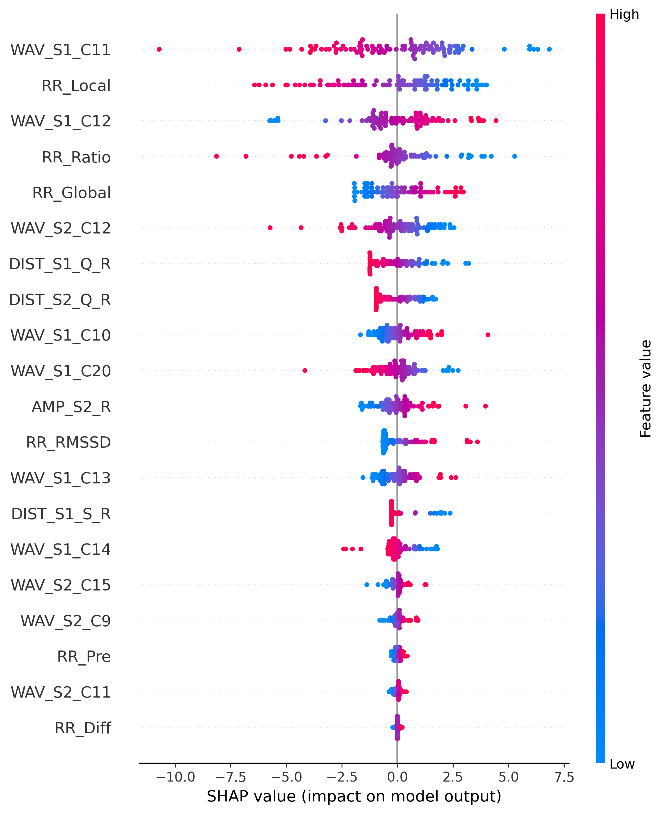
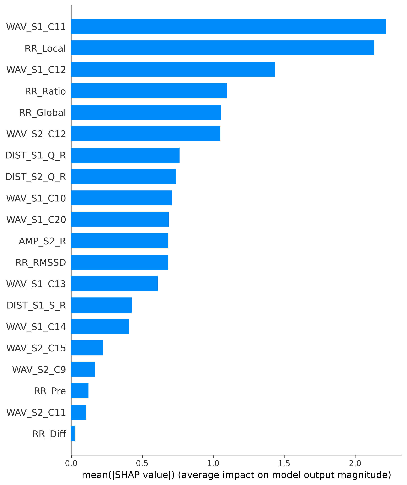
Shows how each feature's SHAP value changes with its actual value. Top features identified: WAV_S1_C11, WAV_S1_C12 (wavelet coefficients), RR_Ratio, RR_Local, RR_Global (RR interval features).
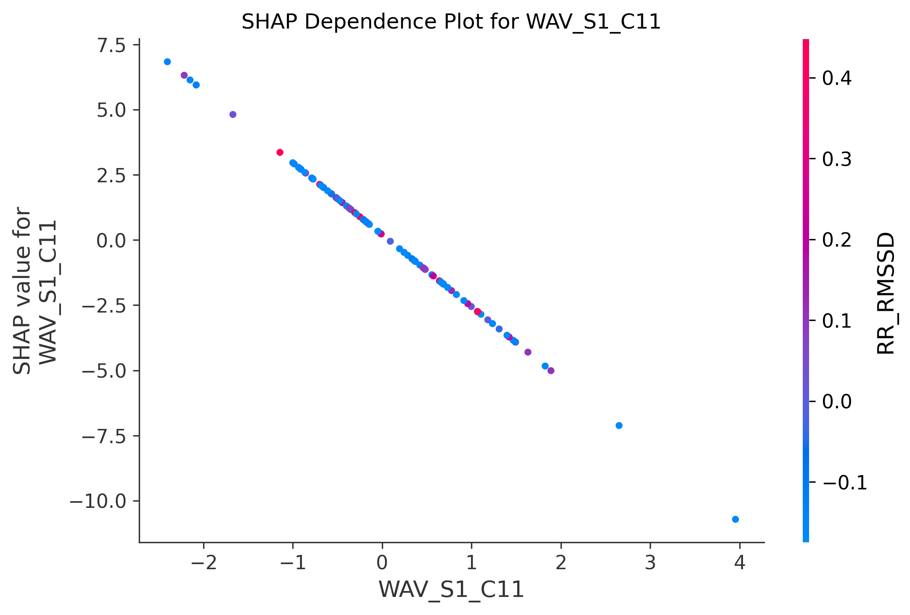
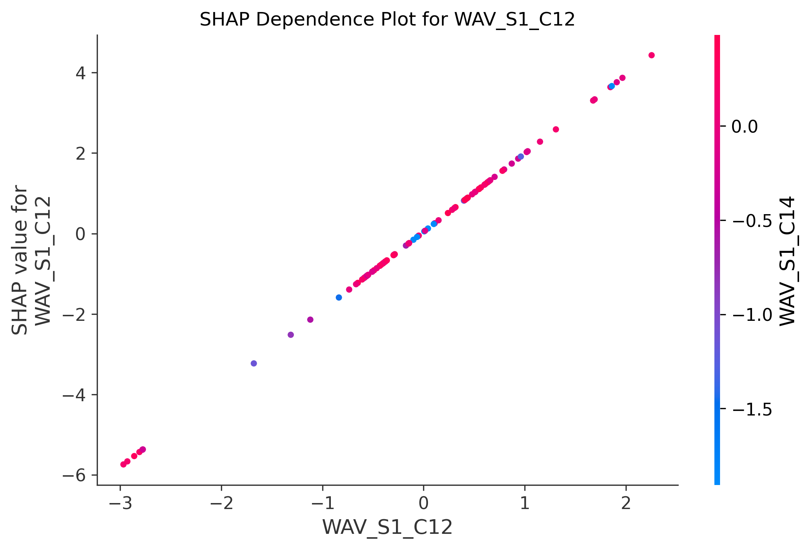
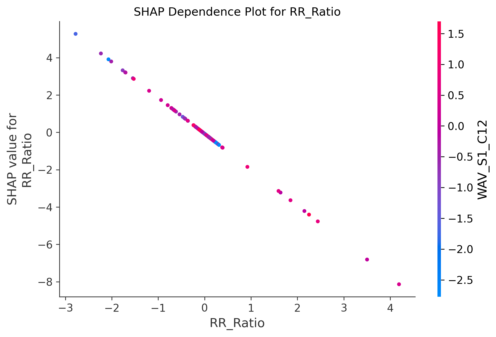
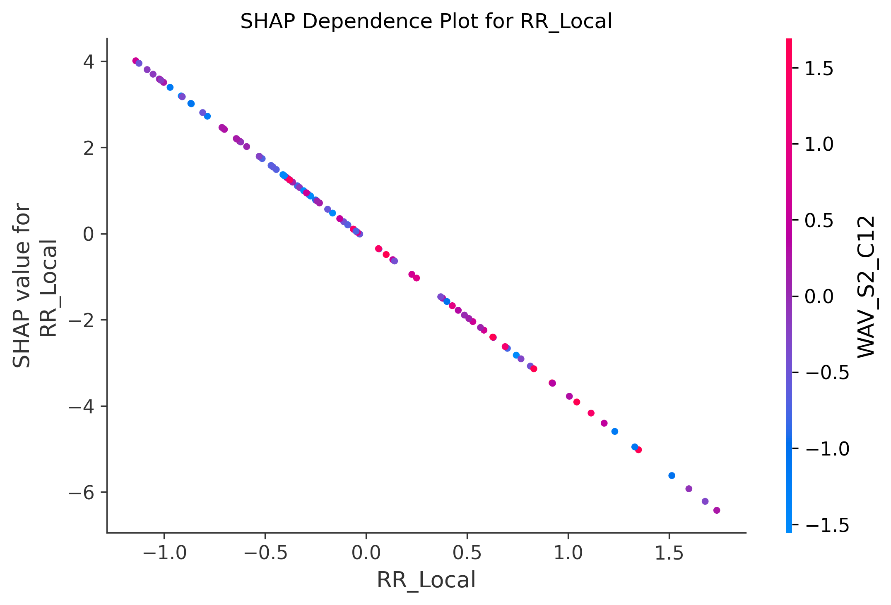
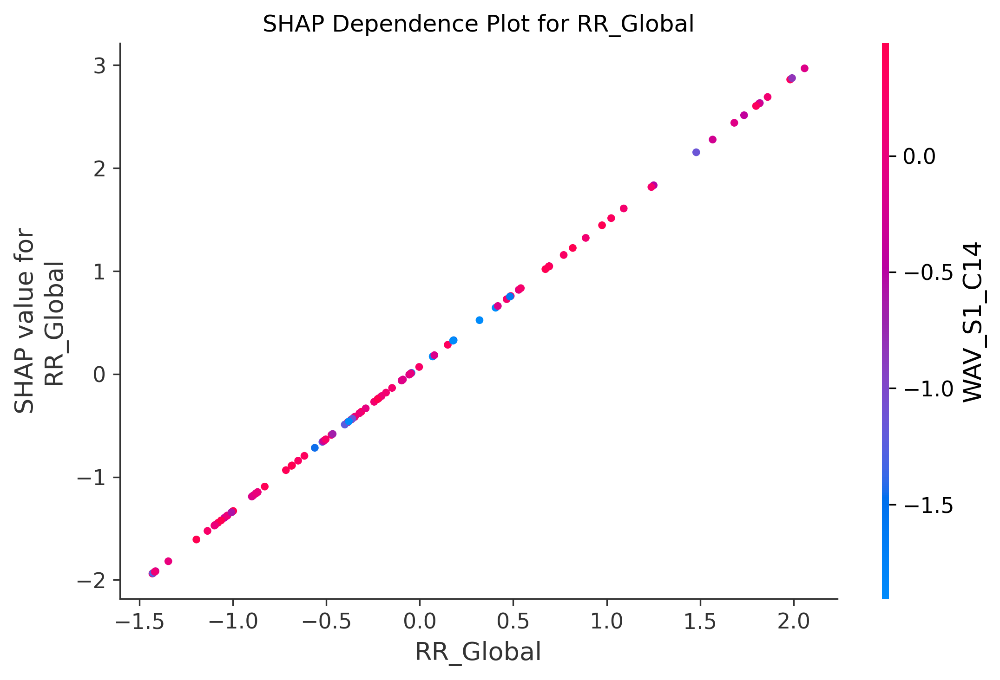
Force plots show exactly which features pushed a specific prediction toward "Normal" (blue) or "Abnormal" (red). The base value is the model's expected output; the final prediction is the sum of all SHAP contributions.
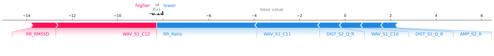
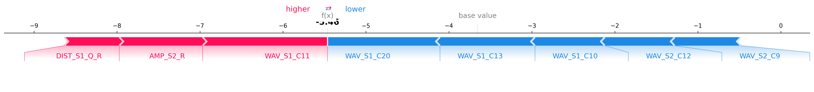
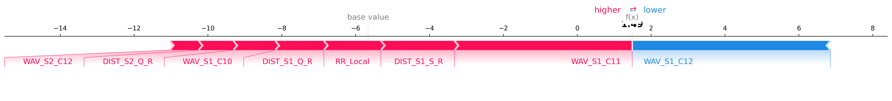
SHAP analysis on the held-out DS2 test set (18 records, strictly unseen patients). This evaluates whether the model's interpretability patterns generalize to new patients.
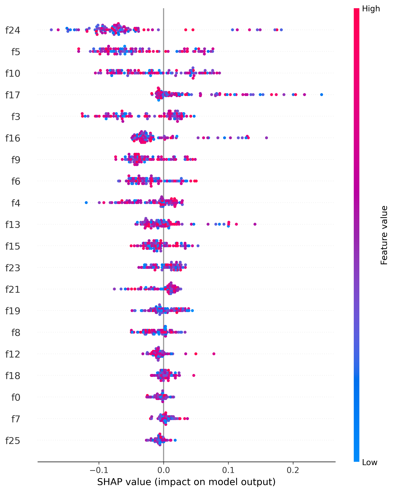
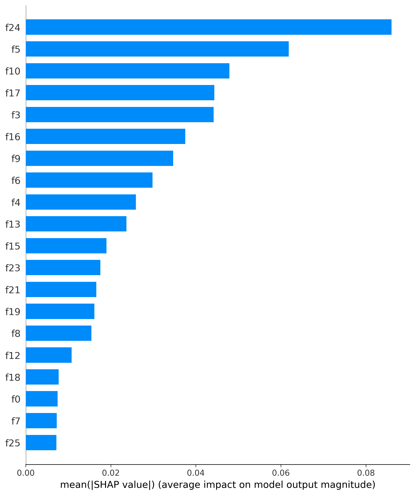
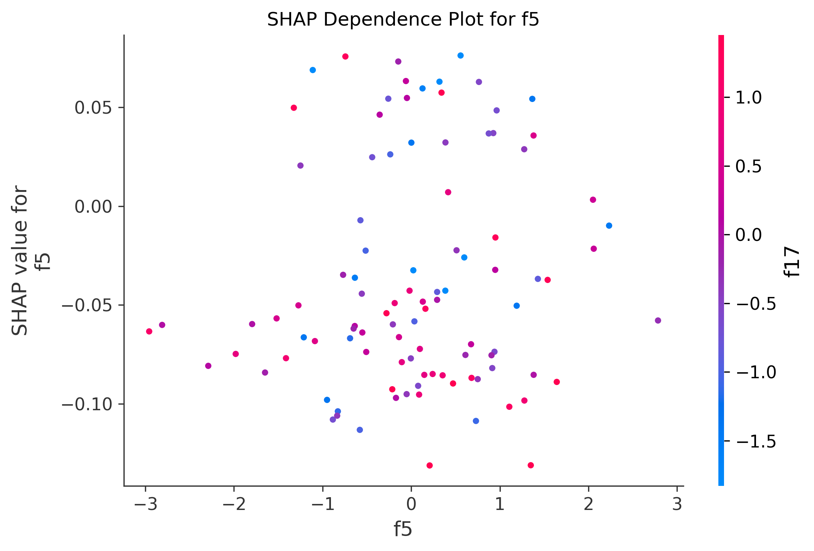
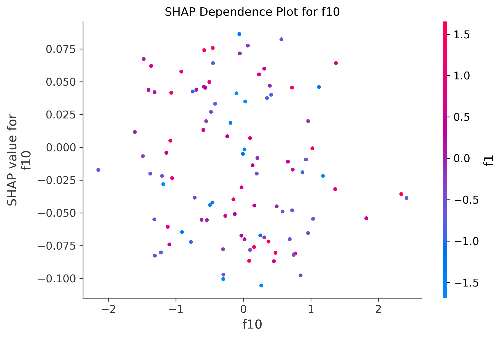
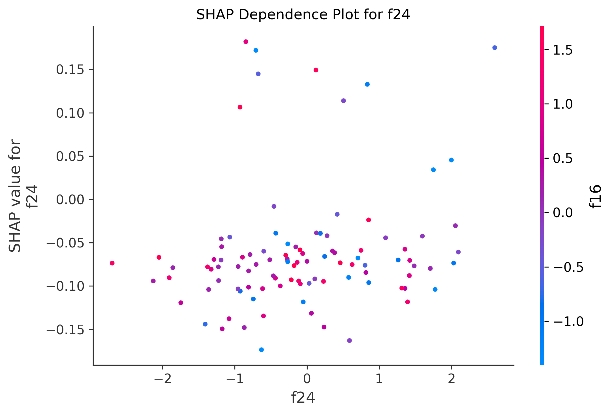